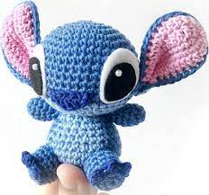

conheça nosso site;3
Bichinhos de crochê feitos a mão. Diz a lenda que os amigurumis teriam a propriedade de atrair boa sorte e prosperidade, protegendo e dando segurança aos seus donos.

paragrafo
Bichinhos de crochê feitos a mão. Diz a lenda que os amigurumis teriam a propriedade de atrair boa sorte e prosperidade, protegendo e dando segurança aos seus donos.